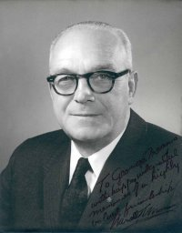
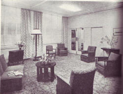
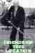
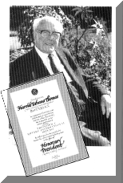
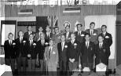

|
Brief histories of the
early New Zealand Clubs
Rotary Club of Auckland
Rotary International District 9920

Home Club to Harold T.
Thomas
(Home Page)
President of Rotary
International 1959-60
1960 Convention history
|
|
HISTORY OF THE ROTARY CLUB OF
AUCKLAND
Garth Stephens
Rotary Global History
Committee

(Auckland
club reception room -
Historian Calum Thomson 3
January 2006)
|
The Rotary Club of Auckland is one of
the longest serving clubs in Australasia. It was founded on June 13,
1921, with 55 Charter members by Special Commissioner Jim Davidson, from
the Club of Calgary. The inaugural meeting was held at Priors Restaurant
in the Strand Arcade. Hon George Fowlds and Charles Rhodes |
did most of the groundwork in bringing
Rotary to New Zealand and they honoured the Auckland Rotary Club as
first president and vice-president. As the first service club in
Auckland, Rotary
will celebrate
100 years of vigorous service to the community in 2021.
|
|
The First Quarter 1921-1946
|
|
The first community service in the Club’s
first year was raising 900 pounds ($1800) for the Boy Scouts. Among the
subsequent long record of contributions there was support for the Blind
Institute in 1926, The YMCA Lodge Hunua in 1928 and the Plunket Society
in 1930-31. The Club was also instrumental in the formation of the
Crippled Children’s Society (now CCS) in 1935, and the Tuberculosis
Association in 1944. |
In 1945 the Club established the Obstetrical
and Gynaecological Committee which led to 100, 000 pounds ($200, 000)
being raised to endow a Professorial Chair in Obstetrics and Gynaecology
at the University of Auckland and eventually to the establishment of
National Women’s Hospital in Auckland. By 1945, ten members had served
overseas, the Club had organised 22 new clubs, and in conjunction with
some of them helped to organise another eight. |
|
The
Second Quarter 1947-1971
|
|
This
period saw great expansion. The Rotary Club of Auckland grew from 182 to
300 members. It also sponsored the establishment of what are now some of
our strongest sister clubs including Newmarket, Pukekohe, Onehunga, and
Otahuhu. In 1947, due to the growth in membership, the club established
a permanent executive secretariat. A major achievement for the club was
Harold Thomas’s appointment as Rotary International Director 1950-1951
and again in 1960-61, still the only New Zealander to have held the
office.
The 50th Anniversary of Rotary
International was marked by the introduction of ROTA – Rotary Overseas
Travel Awards – |

and this has since been adopted as the
District’s special project. After several successful years of operation,
this was picked up by the Rotary Foundation, which adopted and adapted
the project as Group Student Exchange, one of Rotary’s most
successful international programs. In 1961, the Outward Bound Trust was
formed and it continues its character building adventure training to
this day.
The club also contributed to the Children’s
Health Research Foundation and assisted in establishing the Junior
Symphony Orchestra and the Maori Youth Centre. A number of Rotary
merit awards were initiated, including the Rotary Scholar Award (medical
scholarship), Rotary Award of Merit for vocation service and the Trophy
of Tradition for the nurse exemplifying the spirit of the nursing
profession. |
|
The Third
Quarter 1972-1996
|
|
Among the many service projects and
assistance to the community in the third quarter, some achievements
stand out. During this period the Harold Thomas Rotary Trust and the
Reaching Out Trust, now the principal component of Child Development
Foundation, were established. The club worked with the District to help
in the establishment of the Children’s Health Foundation nationally.
Other notable achievements include the establishment of Boystown, a log
cabin at Camp Adair, help with the Blood Unit at Auckland Hospital, a
van for the Crippled Children’s Association, clothing for the Salvation
Army, |
a substantial donation to a new hospital
facility for the disabled at the end of the decade, and the sponsoring
of Richard Yen from China to Auckland Grammar.
In 1994, the club staged the first Ellerslie
Flower Show, which is now an annual event providing a venue and focus
for New Zealand’s horticultural industry to showcase its products. It
also serves, as a better way for the club to fund some of the area’s
most worthy causes. The project brings together Club members, their
spouses and friends at what is perhaps the biggest fundraising event for
the Club calendar. |
|
Fourth
Quarter (1996-2021)
|
|
As the Auckland Club heads towards its
centennial in 2021, there are many challenges that it will no doubt
face. The changing face of Auckland requires new approaches towards
meeting the goals of the club through the various avenues of service.
Now is also a time to look back and reflect on the past years and learn
and appreciate. From the initial membership of 55, the Auckland Rotary
Club has grown to become the largest club in New Zealand with over 200
members. Throughout the years the club has continued to support the
charities and organizations that it supported in its early years, like
the YMCA, Plunket Society, and Salvation Army.
|
Rotary has remained a centre of goodwill,
energy and direction for the city and continues to fulfill its role of
building “bridges of friendship” in its international services. Rotary’s
ideals remain relevant today and will surely carry a message through the
coming years. The history of the Rotary Club of Auckland is a history of
its many services and charitable support. And with its dedicated members
the club will continue to fulfill the Rotary objective by encouraging
and fostering the ideal of service as a basis of wholesale enterprise.
Garth Stephens
Rotary Global History
Committee |
|

{kind=link}
{kind=link}
{kind=link}